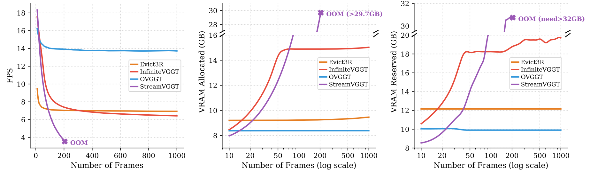
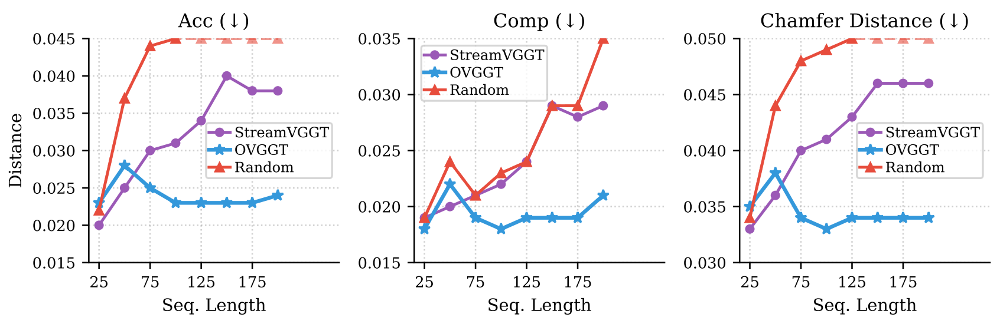

$cat results
Qualitative Visualizations

Efficiency Comparison

Comparison with Full-Cache Baseline

Quantitative Comparisons
Quantitative comparison on 7-Scenes and NRGBD datasets across different sequence lengths. Evict3R† denotes dynamically calibrated pruning rate.
| Method | 7-Scenes | NRGBD | ||||||||||||
|---|---|---|---|---|---|---|---|---|---|---|---|---|---|---|
| Len. | Acc ↓ | Comp ↓ | NC ↑ | Len. | Acc ↓ | Comp ↓ | NC ↑ | |||||||
| Mean | Med. | Mean | Med. | Mean | Med. | Mean | Med. | Mean | Med. | Mean | Med. | |||
| Spann3R | 200 | 0.215 | 0.131 | 0.122 | 0.063 | 0.535 | 0.550 | 100 | 0.111 | 0.069 | 0.045 | 0.015 | 0.636 | 0.733 |
| CUT3R | 0.087 | 0.048 | 0.045 | 0.014 | 0.566 | 0.601 | 0.039 | 0.024 | 0.013 | 0.004 | 0.645 | 0.748 | ||
| Point3R | 0.041 | 0.019 | 0.023 | 0.006 | 0.579 | 0.622 | 0.046 | 0.028 | 0.016 | 0.004 | 0.662 | 0.775 | ||
| TTT3R | 0.027 | 0.015 | 0.023 | 0.005 | 0.582 | 0.627 | 0.031 | 0.019 | 0.012 | 0.004 | 0.650 | 0.756 | ||
| StreamVGGT | 0.038 | 0.014 | 0.029 | 0.007 | 0.583 | 0.628 | 0.024 | 0.014 | 0.013 | 0.003 | 0.663 | 0.777 | ||
| Evict3R | OOM | 0.025 | 0.015 | 0.013 | 0.003 | 0.664 | 0.781 | |||||||
| Evict3R† | 0.037 | 0.013 | 0.027 | 0.007 | 0.584 | 0.631 | 0.031 | 0.020 | 0.013 | 0.003 | 0.665 | 0.791 | ||
| InfiniteVGGT | 0.046 | 0.016 | 0.031 | 0.008 | 0.582 | 0.627 | 0.035 | 0.022 | 0.014 | 0.003 | 0.669 | 0.787 | ||
| Ours | 0.024 | 0.008 | 0.021 | 0.005 | 0.587 | 0.635 | 0.022 | 0.014 | 0.012 | 0.003 | 0.672 | 0.796 | ||
| Spann3R | 500 | 0.343 | 0.263 | 0.154 | 0.085 | 0.515 | 0.521 | 300 | 0.346 | 0.221 | 0.175 | 0.099 | 0.558 | 0.586 |
| CUT3R | 0.194 | 0.143 | 0.092 | 0.034 | 0.527 | 0.538 | 0.244 | 0.136 | 0.081 | 0.019 | 0.575 | 0.613 | ||
| Point3R | 0.056 | 0.025 | 0.031 | 0.012 | 0.555 | 0.584 | 0.076 | 0.042 | 0.014 | 0.004 | 0.624 | 0.707 | ||
| TTT3R | 0.065 | 0.037 | 0.030 | 0.006 | 0.552 | 0.578 | 0.102 | 0.043 | 0.026 | 0.005 | 0.610 | 0.678 | ||
| StreamVGGT | OOM | OOM | ||||||||||||
| Evict3R | OOM | OOM | ||||||||||||
| Evict3R† | 0.042 | 0.016 | 0.026 | 0.005 | 0.559 | 0.589 | 0.042 | 0.026 | 0.017 | 0.004 | 0.640 | 0.739 | ||
| InfiniteVGGT | 0.040 | 0.015 | 0.024 | 0.005 | 0.561 | 0.593 | 0.053 | 0.031 | 0.024 | 0.005 | 0.646 | 0.751 | ||
| Ours | 0.031 | 0.011 | 0.020 | 0.003 | 0.561 | 0.593 | 0.037 | 0.022 | 0.015 | 0.003 | 0.642 | 0.740 | ||
| Spann3R | 1000 | 0.340 | 0.262 | 0.154 | 0.092 | 0.508 | 0.510 | 500 | 0.516 | 0.342 | 0.225 | 0.130 | 0.552 | 0.578 |
| CUT3R | 0.240 | 0.166 | 0.102 | 0.015 | 0.513 | 0.516 | 0.328 | 0.247 | 0.157 | 0.085 | 0.562 | 0.592 | ||
| Point3R | 0.068 | 0.028 | 0.025 | 0.006 | 0.533 | 0.549 | 0.116 | 0.049 | 0.027 | 0.004 | 0.620 | 0.698 | ||
| TTT3R | 0.126 | 0.080 | 0.050 | 0.010 | 0.525 | 0.535 | 0.169 | 0.082 | 0.096 | 0.015 | 0.594 | 0.647 | ||
| StreamVGGT | OOM | OOM | ||||||||||||
| Evict3R | OOM | OOM | ||||||||||||
| Evict3R† | 0.134 | 0.059 | 0.052 | 0.009 | 0.531 | 0.545 | 0.072 | 0.040 | 0.026 | 0.006 | 0.641 | 0.739 | ||
| InfiniteVGGT | 0.061 | 0.031 | 0.035 | 0.014 | 0.537 | 0.554 | 0.070 | 0.046 | 0.037 | 0.008 | 0.642 | 0.743 | ||
| Ours | 0.039 | 0.014 | 0.020 | 0.003 | 0.537 | 0.554 | 0.054 | 0.032 | 0.026 | 0.006 | 0.637 | 0.732 | ||
Quantitative comparison on full sequences of ETH3D (outdoor) and Long3D (ultra-long) datasets. Ours200 and Ours400 denote 200K and 400K token budgets.
| Method | ETH3D (Outdoor) | Long3D (Ultra-Long) | ||||||||||
|---|---|---|---|---|---|---|---|---|---|---|---|---|
| Acc ↓ | Comp ↓ | NC ↑ | Acc ↓ | Comp ↓ | NC ↑ | |||||||
| Mean | Med. | Mean | Med. | Mean | Med. | Mean | Med. | Mean | Med. | Mean | Med. | |
| CUT3R | 0.940 | 0.607 | 0.709 | 0.374 | 0.718 | 0.812 | 6.189 | 2.405 | 1.921 | 1.535 | 0.501 | 0.497 |
| TTT3R | 0.598 | 0.374 | 0.585 | 0.223 | 0.728 | 0.826 | 7.341 | 2.018 | 1.455 | 1.235 | 0.509 | 0.503 |
| StreamVGGT | 0.601 | 0.369 | 0.442 | 0.169 | 0.791 | 0.933 | OOM | |||||
| Evict3R† | 0.605 | 0.375 | 0.442 | 0.163 | 0.792 | 0.934 | 4.928 | 2.710 | 0.715 | 0.204 | 0.507 | 0.504 |
| InfiniteVGGT | 0.603 | 0.371 | 0.444 | 0.169 | 0.792 | 0.933 | 4.344 | 3.668 | 0.974 | 0.205 | 0.517 | 0.525 |
| Ours200 | 0.628 | 0.396 | 0.380 | 0.121 | 0.790 | 0.934 | 2.453 | 1.794 | 0.390 | 0.060 | 0.507 | 0.509 |
| Ours400 | 0.535 | 0.317 | 0.394 | 0.107 | 0.793 | 0.934 | 2.449 | 1.675 | 0.542 | 0.151 | 0.507 | 0.509 |
Video depth evaluation on Bonn and KITTI across different sequence lengths.
| Method | Bonn | KITTI | ||||||||||
|---|---|---|---|---|---|---|---|---|---|---|---|---|
| Abs Rel ↓ | δ < 1.25 ↑ | Abs Rel ↓ | δ < 1.25 ↑ | |||||||||
| 100 | 300 | 500 | 100 | 300 | 500 | 100 | 300 | 500 | 100 | 300 | 500 | |
| StreamVGGT | 0.055 | -- | -- | 0.974 | -- | -- | 0.166 | -- | -- | 0.740 | -- | -- |
| Evict3R† | 0.063 | 0.072 | 0.072 | 0.963 | 0.951 | 0.957 | 0.192 | 0.213 | 0.198 | 0.693 | 0.700 | 0.705 |
| InfiniteVGGT | 0.056 | 0.073 | 0.070 | 0.975 | 0.957 | 0.960 | 0.165 | 0.249 | 0.257 | 0.742 | 0.556 | 0.577 |
| Ours | 0.055 | 0.071 | 0.067 | 0.974 | 0.956 | 0.959 | 0.128 | 0.133 | 0.135 | 0.839 | 0.844 | 0.839 |